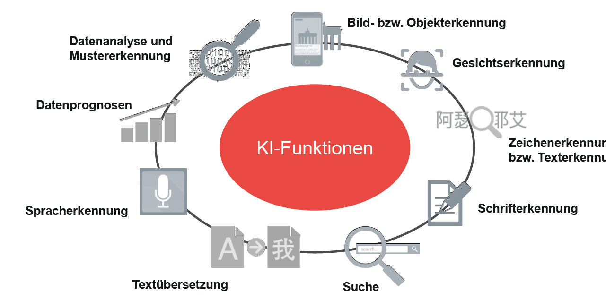

Künstliche Intelligenz (KI) bezieht sich auf die Fähigkeit von Maschinen, Aufgaben auszuführen, die normalerweise menschliche Intelligenz erfordern. Dazu gehören Dinge wie Lernen, Problemlösen, Wahrnehmen, Sprachverstehen und Entscheidungsfindung. Maschinelles Lernen ist ein Teilbereich der KI, der auf Algorithmen basiert, die aus Daten lernen und Vorhersagen oder Entscheidungen treffen, ohne explizit programmiert zu sein. Ein weiteres bedeutendes Feld innerhalb der KI ist das Deep Learning, das neuronale Netze verwendet, die nach dem menschlichen Gehirn modelliert sind, um große Datenmengen zu verarbeiten und Muster zu erkennen. Darüber hinaus gibt es die Verarbeitung natürlicher Sprache, auch NLP genannt, die es Computern ermöglicht, menschliche Sprache zu verstehen, zu interpretieren und zu generieren. Ein Beispiel hierfür sind Sprachassistenten wie Siri und Alexa. Computer Vision ist eine weitere Anwendung der KI, die Maschinen dazu befähigt, visuelle Informationen zu verarbeiten und zu interpretieren, wie zum Beispiel bei der Gesichtserkennung und Objekterkennung. KI findet in zahlreichen Bereichen Anwendung, darunter Gesundheit, Finanzen, Transport und Einzelhandel. Sie hilft dabei, Prozesse zu optimieren, neue Erkenntnisse zu gewinnen und alltägliche Aufgaben zu automatisieren. Durch den Einsatz von KI können zum Beispiel medizinische Diagnosen präziser gestellt, finanzielle Risiken besser bewertet, Verkehrsströme effizienter gelenkt und das Einkaufserlebnis personalisiert werden. Die fortschreitende Entwicklung und Implementierung von KI-Technologien hat das Potenzial, unser tägliches Leben erheblich zu verbessern und die Art und Weise, wie wir arbeiten und interagieren, nachhaltig zu verändern.
Künstliche Intelligenz (KI) funktioniert durch die Nutzung verschiedener Technologien und Ansätze, um Aufgaben zu erledigen, die normalerweise menschliche Intelligenz erfordern. Zunächst müssen große Mengen an Daten gesammelt werden, die als Grundlage für das Lernen dienen. Diese Daten können aus diversen Quellen stammen, wie etwa Texten, Bildern, Videos und Sensorinformationen. Nach der Datensammlung erfolgt die Datenverarbeitung und -vorbereitung, bei der die gesammelten Daten bereinigt und in ein für das Training von KI-Modellen geeignetes Format umgewandelt werden. Dies kann Schritte wie das Entfernen von Rauschen, das Normalisieren von Werten und das Aufteilen der Daten in Trainings- und Testsets umfassen. Anschließend beginnt das Modelltraining, bei dem Algorithmen verwendet werden, um Muster in den Daten zu erkennen. Maschinelles Lernen, ein Teilbereich der KI, nutzt Algorithmen wie Entscheidungsbäume, neuronale Netze und Support Vector Machines, um Modelle zu trainieren. Während des Trainings passt das Modell seine Parameter an, um die bestmöglichen Vorhersagen zu treffen. Nach dem Training wird das Modell mithilfe von Testdaten bewertet, die es zuvor nicht gesehen hat. Dies hilft dabei zu bestimmen, wie gut das Modell generalisiert und auf neue, unbekannte Daten anwendbar ist. Basierend auf den Bewertungsergebnissen kann das Modell weiter optimiert und feinabgestimmt werden, indem Parameter angepasst, zusätzliche Daten hinzugefügt oder die Algorithmen verbessert werden. Sobald das Modell zufriedenstellend funktioniert, kann es in einer realen Umgebung eingesetzt werden. Dies kann in Form einer Anwendung, eines Dienstes oder eines eingebetteten Systems geschehen. KI-Modelle können kontinuierlich aus neuen Daten lernen und sich verbessern. Außerdem ist es wichtig, das Modell regelmäßig zu überwachen, um sicherzustellen, dass es weiterhin korrekt funktioniert und bei Bedarf Anpassungen vorzunehmen. Diese Schritte und Konzepte bilden die Grundlage für viele Anwendungen von KI in verschiedenen Bereichen, von der Bilderkennung über die Sprachverarbeitung bis hin zur Entscheidungsfindung und Automatisierung. Jede dieser Anwendungen kann jedoch spezifische Techniken und Algorithmen erfordern, je nach den Anforderungen und Zielen des Projekts.
- Maschinelles Lernen
- Neuronale Netze
- Deep Learning
- Natürliche Sprachverarbeitung

KI wird in vielen Bereichen eingesetzt, darunter:
- Gesundheitswesen (Diagnose, Medikamentenentwicklung)
- Finanzen (Betrugserkennung, Algorithmic Trading)
- Verkehr (Autonomes Fahren, Verkehrsoptimierung)
- Kundenservice (Chatbots, Personalisierung)
- Bildung (Adaptive Lernsysteme) 